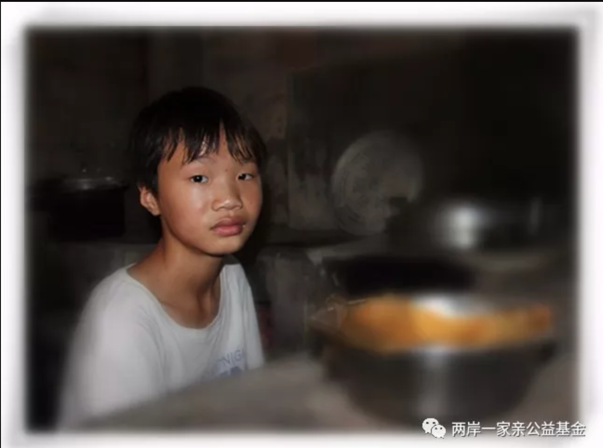

江西省龙南县一个不起眼的小山村里，有这样一个未成年的男孩.

他叫大鹏，父母都不在了。他还有个妹妹。他们和奶奶相依为命。奶奶身体不好，需要经常看病买药。
妹妹上小学二年级了，家里的收入只能供一个孩子上学，大鹏放弃了自己上学的机会，让妹妹背起了书包。
村子离广东不远，村里的好多人都离家去广东打工赚钱。初中还没毕业的大鹏，觉得自己应该辍学去赚钱养家……
坚强的心要承受生活给予的艰辛，稚嫩的肩膀要扛起比同龄人更加沉重的家庭责任。大鹏，一个未成年的小男子汉，你是好样的！你要相信，磨难只会让有责任感有信心有梦想的人更加无畏地活着！